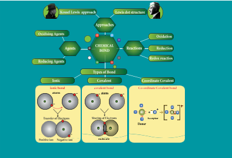
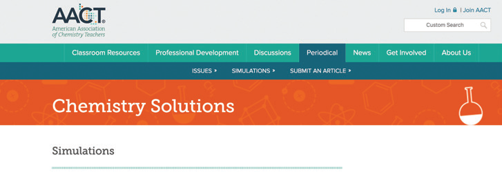
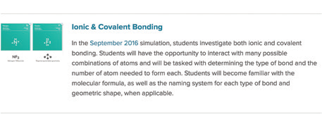
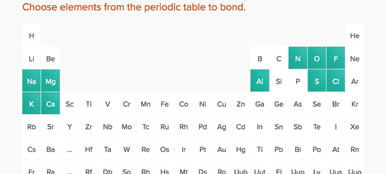
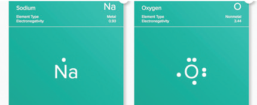
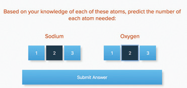

1. Number of valence electrons in carbon is
A bracket closed 2
B bracket closed 4
C bracket closed 3
D bracket closed 5
2. Sodium having atomic number 11, is ready to dash electron/ electrons to attain the nearest noble gas electronic configuration.
A bracket closed gain one
B bracket closed gain two
c bracket closed lose one
d bracket closed lose two
3. The element that would form anion by gaining electrons in a chemical reaction is dash
A bracket closed potassium
b bracket closed calcium
c bracket closed fluorine
d bracket closed iron
4. Bond formed between a metal and non metal atom is usually dash
A bracket closed ionic bond
b bracket closed covalent bond
c bracket closed coordinate bond
5. dash compounds have high melting and boiling points.
A bracket closed Covalent
B bracket closed Coordinate c bracket closed Ionic
6. Covalent bond is formed by dash
A bracket closed transfer of electrons
b bracket closed sharing of electrons
c bracket closed sharing a pair of electrons
7. Oxidising agents are also called as dash because they remove electrons form other substances.
A bracket closed electron donors
b bracket closed electron acceptors
8. Elements with stable electronic configurations have eight electrons in their valence shell. They are dash
A bracket closed halogens
B bracket closed metals
C bracket closed noble gases
D bracket closed non metals
1. How do atoms attain Noble gas electronic configuration question mark
2. NaCl is insoluble in carbon tetrachloride but soluble in water. Give reason.
3. Explain Octet rule with an example.
4. Write a note on different types on bonds.
5. Correct the wrong statements.
a. Ionic compounds dissolve in non polar solvents.
b. Covalent compounds conduct electricity in molten or solution state.
6. Complete the table give below.
Element |
Atomic number |
Electron distribution |
Valence electrons |
Lewis dot structure |
Lithium |
3 |
NIL |
NIL |
NIL |
Boron |
5 |
NIL |
NIL |
NIL |
Oxygen |
8 |
NIL |
NIL |
NIL |
7. Draw the electron distribution diagram for the formation of Carbon di oxide Bracket OPEN C O 2 bracket closed molecule.
8. Fill in the following table according to the type of bonds formed in the given molecule. CaCl2 , H2 O, Ca O, C O, K Br, HCl, CCl4 , HF, C O2 , A l 2 Cl6
Table
Ionic bond |
Covalent bond |
Coordinate covalent bond |
|
|
|
|
|
|
|
|
|
9. The property which is characteristics of an Ionic compound is that
a. it often exists as gas at room temperature.
b. it is hard and brittle.
c. it undergoes molecular reactions.
d. it has low melting point.
10. Identify the following reactions as oxidation or reduction
a. Na gives Na plus plus e minus
b. F e3 plus plus 2 e minus gives F e plus
11. Identify the compounds as Ionic/ Covalent/Coordinate based on the given characteristics.
a. Soluble in non polar solvents
b. Undergoes faster/instantaneous reactions
c. Non conductors of electricity
d. Solids at room temperature
12. An atom X with atomic number 20 combines with atom Y with atomic number 8. Draw the dot structure for the formation of the molecule XY.
13. Considering MgCl2 as ionic compound and CH4 as covalent compound give any two differences between these two compounds.
14. Why are Noble gases inert in nature question mark
1. List down the differences between Ionic and Covalent compounds.
2. Give an example for each of the following statements.
a. A compound in which two Covalent bonds are formed.
b. A compound in which one ionic bond is formed.
c. A compound in which two Covalent and one Coordinate bonds are formed.
d. A compound in which three covalent bonds are formed.
e. A compound in which coordinate bond is formed.
3. Identify the incorrect statement and correct them.
a. Like covalent compounds, coordinate compounds also contain charged particles Bracket OPEN ions bracket closed. So they are good conductors of electricity.
b. Ionic bond is a weak bond when compared to Hydrogen bond.
c. Ionic or electrovalent bonds are formed by mutual sharing of electrons between atoms.
d. Loss of electrons is called Oxidation and gain of electron is called Reduction.
e. The electrons which are not involved in bonding are called valence electrons.
4. Discuss in brief about the properties of coordinate covalent compounds.
5. Find the oxidation number of the elements in the following compounds.
a. C in C O2
b. Mn in MnSO4
c. N in HNO3
1. Modern Inorganic Chemistry -R.D.Madan.
2. Textbook of Inorganic Chemistry -Soni, P.L. and Mohan Katyal.
1. https://youtu.be/G08rZ6xiIuA
2. https://youtu.be/LkAykOv1foc
3. https://youtu.be/DEdRcfyYnSQ

ICT CORNER Chemical Bonding
Explore this activity to know about the various types of Chemical bonding in compounds and to learn chemical bonding

Steps
Copy and paste the link given below or type the URL in the browser.
In the Simulations section, scroll down and select Ionic & Covalent Bonding option.
Select any two elements which are highlighted in the periodic table.
Once selected, two options called Ionic Bond or Covalent Bond will appear. In it, click any one of the options to find number of atoms option. Select the numbers and submit the answers to verify.




Step 1 Step 2 Step 3 Step 4
Browse in the link:
URL: https://teachchemistry.org/periodical/simulations or Scan the QR Code.